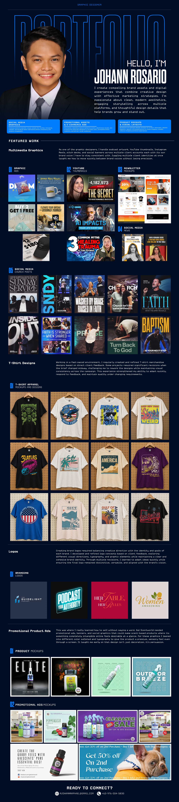

Johann Rosario — Graphic Designer Portfolio

Hello, I’m Johann Rosario
Graphic Designer.
I create compelling brand assets and digital experiences that combine creative design with effective marketing strategies. I’m passionate about clean, modern aesthetics, engaging storytelling across multiple platforms, and thoughtful design details that help brands grow and stand out.
Featured Work
Multimedia Graphics
Creating platform-specific visual content for YouTube, Instagram, LinkedIn, and Facebook while maintaining brand consistency and audience engagement.
Digital Marketing Assets
Developing compelling digital marketing assets, advertising visuals, and promotional materials designed to increase sales, strengthen brand visibility, and attract target audiences.
Mockups and Brand Experiences
Developing and applying design mockups for product showcases, website elements, apparel, and presentations to create engaging, visually cohesive shopping and brand experiences.
Graphic Design
As one of the graphic designers, I handle podcast artwork, YouTube thumbnails, Instagram Reels, pitch decks, and social banners across multiple client accounts, each with its own brand voice. Juggling multiple client identities taught me how to move quickly between brand voices without losing precision.
T-shirt Designs
Working in a fast-paced environment, I regularly created and refined T-shirt merchandise designs based on direct client feedback. Some projects required significant revisions when the brief changed midway, challenging me to rework designs while maintaining visual consistency across the campaign. This experience strengthened my ability to adapt quickly, respond to feedback, and maintain quality under changing requirements.
Logos
Creating brand logos required balancing creative direction with the identity and goals of each brand. I developed and refined logo concepts based on client feedback, exploring different visual directions, typography, and graphic elements while maintaining a clear and cohesive brand identity. Through multiple revisions, I learned to adapt ideas quickly while ensuring the final logo remained distinctive, versatile, and aligned with the brand’s vision.
Promotional Product Ads
Gal Scentworld needed promotional ads, banners, and social graphics that could make scent-based products feel desirable at a glance. I leaned into different color palettes and typography to give the product a premium, sensory feel through a screen. It taught me that design isn’t just decoration, it’s persuasion.
Contact
Email: rjohannraphael@gmail.com
Phone: +63 976 004 5830